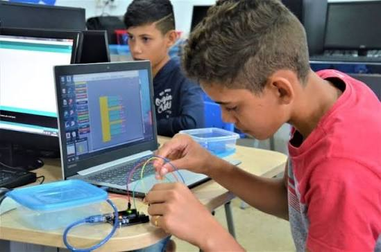

Conectando conhecimento, inovação e arte no IFCE Campus Maranguape.
A Semana de Tecnologia e Cultura do IFCE Campus Maranguape é um evento anual promovido com o objetivo de integrar a comunidade acadêmica por meio de debates, apresentações e capacitações. O encontro busca aproximar os estudantes das novas tendências tecnológicas e das manifestações culturais locais.
Durante o evento, os participantes terão a oportunidade de desenvolver novas habilidades práticas em oficinas, assistir a palestras com profissionais qualificados e prestigiar apresentações artísticas organizadas pelos próprios alunos e convidados.

| Horário | Nome da Atividade | Local |
|---|---|---|
| 08:00 - 10:00 | Abertura e Palestra de Inteligência Artificial | Auditório |
| 10:15 - 12:00 | Oficina de Desenvolvimento Web com CSS3 | Laboratório de Informática 03 |
| 13:30 - 15:30 | Mesa Redonda: Cultura Digital e Sociedade | Sala - 111 |
| 15:45 - 17:00 | Apresentação Cultural e Encerramento | Auditorio |
Aprenda a construir e estilizar páginas web modernas utilizando HTML5 e CSS3 na prática.
Saiba maisMostra de arte, fotografia e projetos culturais desenvolvidos pelos alunos do campus.
Saiba maisAs inscrições para todas as oficinas e palestras são totalmente gratuitas e abertas ao público. Garanta sua vaga com antecedência acessando o portal oficial da instituição.
Para se inscrever, acesse o site oficial do IFCE: Acessar o site do IFCE